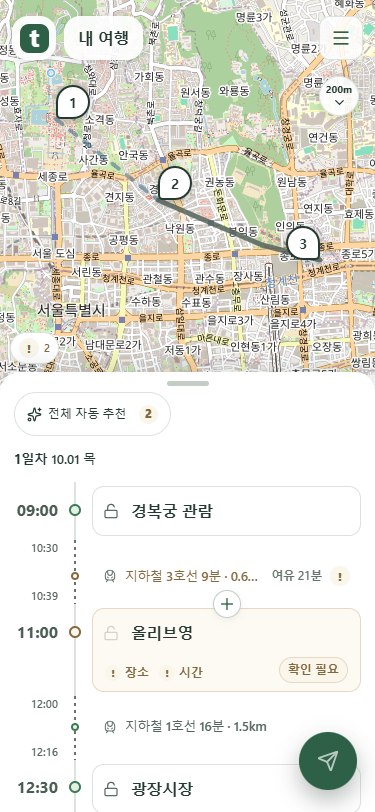
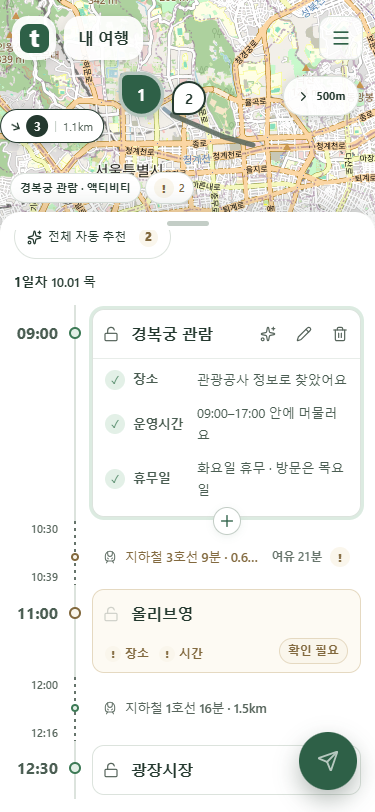
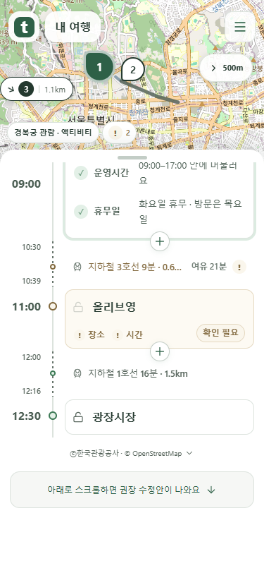
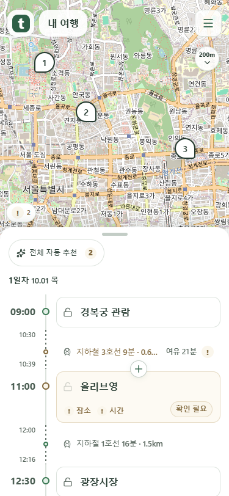

시간 표시와 하단 여백 수정
일정 시작 시각은 크게, 끝 시각과 도착 시각은 이동 점선의 양끝에 작게 표시합니다. 이미지를 누르면 원본을 볼 수 있습니다.
점선 양끝의 시각
앞 일정 끝 시각은 위에, 도착 시각은 아래에 표시합니다. 세로 지도 단추는 거리 눈금 아래에 화살표가 놓입니다.

일정 추가를 취소한 뒤
원래 추가하던 자리로 돌아옵니다. 화면 아래가 비면서 마지막 카드가 잘리던 문제를 수정했습니다.

끝까지 스크롤한 목록
마지막 일정과 출처, 권장 수정안 안내까지 이어집니다.

목록을 조작하는 동안
스크롤하거나 드래그하는 동안 제출 단추가 사라집니다. 조작이 멈추면 다시 나타납니다.
